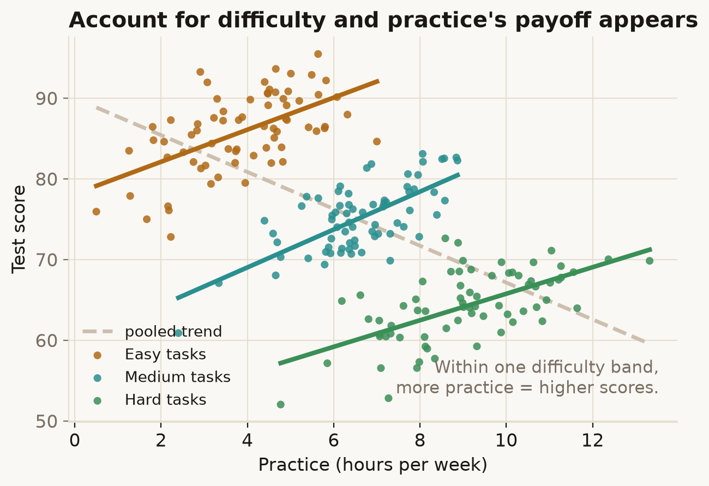

Sometimes a real effect is hidden — or even pointed backwards — by a second variable pulling the other way. Account for that variable and the effect steps into view. It's confounding's optimistic cousin: adjusting reveals a relationship instead of dissolving one.
Try it
Does practising for a test help? In the raw data it looks like it doesn't. Drag from Ignore difficulty to Group by difficulty.
What's going on
Pooled together, more practice goes with lower scores — practice looks pointless, even harmful. But split by how hard the tasks were and within every difficulty band, more practice clearly raises the score. The overall picture had it backwards.
The trick is that the keen practisers took on harder tasks, and harder tasks score lower. That difficulty effect runs opposite to the practice effect and, across the whole sample, more than cancels it. Difficulty is a suppressor: hold it fixed and you stop it masking practice, so practice's true positive effect appears. Mechanically it's the same adjustment as removing a confounder; the difference is the direction it moves the answer.

In the real world
Suppression was first described by Paul Horst in 1941, analysing how the US Army selected pilots. Some test scores barely predicted success on their own, yet sharply improved predictions once combined with others — they worked by removing irrelevant variance from a second predictor rather than by correlating with the outcome directly. The idea is now standard in regression: adding a variable can increase another predictor's coefficient, the signature of suppression.
How not to get fooled
A weak or zero raw correlation doesn't mean no effect; it can mean two effects cancelling. Before concluding "X doesn't matter," ask whether the people high in X also differ on something that pushes the outcome the other way. The flip side of the same coin: watch for a coefficient that jumps when you add a control — that's worth understanding, not just reporting.
Sources
- P. Horst (1941), The role of predictor variables which are independent of the criterion, in The Prediction of Personal Adjustment, Social Science Research Council — the original suppressor variable.
- A. J. Conger (1974), A revised definition for suppressor variables, Educational and Psychological Measurement, 34(1): 35–46. doi
- D. P. MacKinnon, J. L. Krull & C. M. Lockwood (2000), Equivalence of the mediation, confounding and suppression effect, Prevention Science, 1(4): 173–181. doi